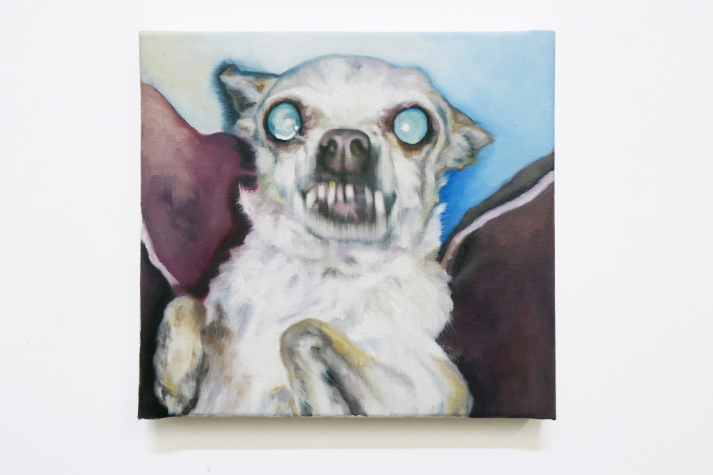
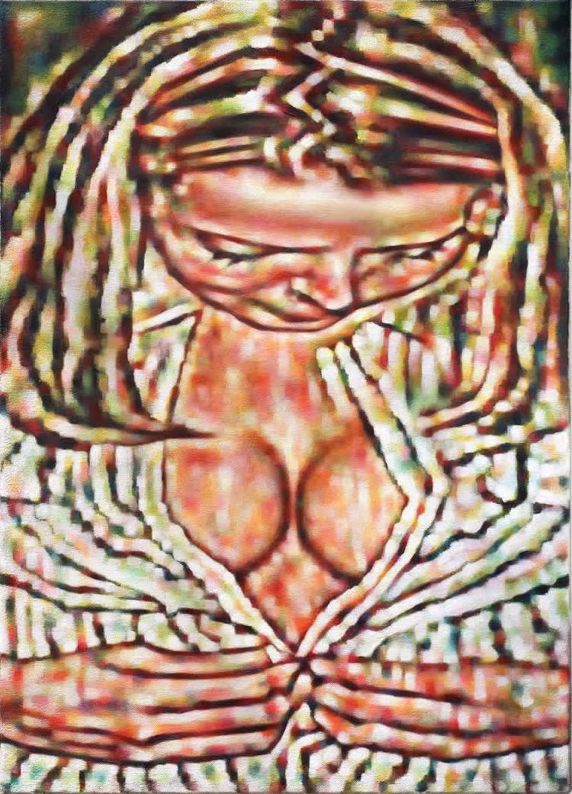
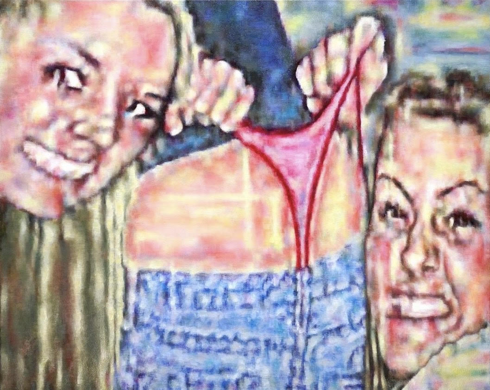

Robert Roest is an artist whose work challenges the boundaries of perception, exploring the way digital
technology influences how we see and interpret the world. For his first mature series, Exorcise from a Safe
Distance (2015), Roest began with a low-resolution digital image of a Persian carpet that he discovered
online. The original photograph, grainy and pixelated, provided a foundation for his exploration of how
visual information can degrade and morph in the digital realm. Roest’s choice of the Persian carpet—a
traditionally ornate and meticulously crafted object—served as a striking contrast to the distorted,
fragmented nature of the image he started with.
By zooming in on selected fragments of this pixelated photo, Roest translated them into large-scale oil
paintings. The process of magnification, coupled with the inherent blurring of the low-resolution image,
allowed him to transform what was once a decorative pattern into something far more ambiguous and
unsettling. Floral motifs became unrecognizable forms—resembling insects, grotesque creatures, or even
demons—challenging the viewer’s ability to identify or categorize the subject matter. This sense of
disorientation is central to Roest’s work, as he grapples with the ambiguity of digital imagery and how it
distorts our understanding of reality.
The title of the series, Exorcise from a Safe Distance, reflects both the monstrous transformations that
arise from the distorted fragments and the inherent distance imposed by the digital medium. The term
'exorcise' suggests a need to confront or dispel the disturbing illusions created by these images, yet the
'safe distance' alludes to the detachment we often experience when interacting with digital
content—observing it from afar, as though through a screen. This tension between proximity and detachment,
between seeing and understanding, is a key theme in Roest’s exploration of perception.
At its core, Roest’s work investigates the act of seeing itself—how we process visual information and how
that process is increasingly shaped by the digital age. The blurred, pixelated images are not merely an
aesthetic choice; they invite a deeper inquiry into the nature of vision, recognition, and the shifting role
of images in our lives. In an era where we are inundated with degraded, fragmented visuals online, Roest’s
paintings offer a meditation on how these images impact our understanding of the world and our place within
it. His work underscores the fragility of perception and the ways in which images—once thought to be
definitive and concrete—are now malleable, distorted, and often unsettling.

Vision, 29x25cm, oil on canvas, 2021
Noelia Towers
GrowingPains 2021 48x36in Courtesy of the artist and deboer,Los Angeles,CAAccount of preceding events, De Boer Gallery (Los Angeles, CA)
Noelia Towers (b. 1992, Barcelona) is a Chicago-based painter whose work delves into themes of identity, memory,
and the passage of time. Her practice is deeply introspective, investigating how personal histories, cultural
influences, and the fluid nature of memory intersect to shape our sense of self. Towers’s work often takes the
form of layered, abstract compositions that fuse bold colors with subtle textures, creating a tension between
the known and the unknown. This interplay encourages the viewer to engage with her pieces on a visceral level,
contemplating the invisible yet powerful forces that influence our thoughts, feelings, and perceptions. Towers’s
background in Barcelona, a city rich in history and culture, provides a foundation for her exploration of
identity, while her time in Chicago has allowed her to expand her practice, integrating diverse influences from
both European and American artistic traditions. Her work bridges the personal with the universal, creating
visual narratives that reflect the complexities of memory and the ways in which we reconstruct our pasts.
Whether drawing from her own experiences or the broader cultural shifts she observes, Towers’s paintings offer a
space for reflection, inviting viewers to reconsider the fluidity and impermanence of their own experiences. Her
unique approach to color and composition is both experimental and deliberate, combining gestural brushwork with
moments of calm precision. By allowing her work to evolve organically, Towers captures the inherent tension
between order and chaos, mirroring the tumultuous nature of personal growth and the shifting sands of memory. As
her artistic journey continues to evolve, Towers remains committed to exploring these profound themes, offering
works that are as visually compelling as they are emotionally resonant.
Marilou Bal

Girl in Pajamas | 2024 | oil on canvas | 70x50cm

Wedgie | 2023 | oil painting on canvas | 90x110cm"
Marilou Bal (b. 1990, France) is a French painter based in Geneva, Switzerland. After moving from New Haven, CT,
to the Paris suburbs in her early childhood, she pursued studies in applied arts before completing her MFA at
the HEAD art school in Geneva in 2018. Since then, Bal has exhibited her work in cities like Paris, Marseille,
Brussels, New York, Oslo, Zürich, Basel, and Lausanne. Notable accomplishments include being a finalist at the
Swiss Art Awards 2023 in Basel and winning the Art Award at the Centre d’Art Contemporain Geneva in 2022. Bal’s
practice is deeply rooted in her personal history, with a distinctive aesthetic influenced by pop iconography
and elements of white trash culture. Her paintings, often set in vibrant, party-like environments, explore
themes of girlhood, self-image, and the dynamics of friendship and mimicry. Working primarily in oil, Bal’s
technique is self-taught, a process she describes as a fortunate discovery during her final years of study.
Living in Geneva’s Jonction neighborhood, where two rivers converge, she finds inspiration in the contrasts
between nature and urban life, often reflecting this duality in her dynamic compositions.